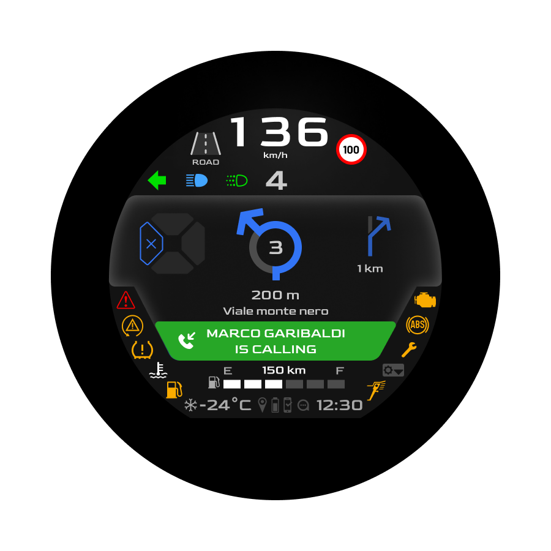
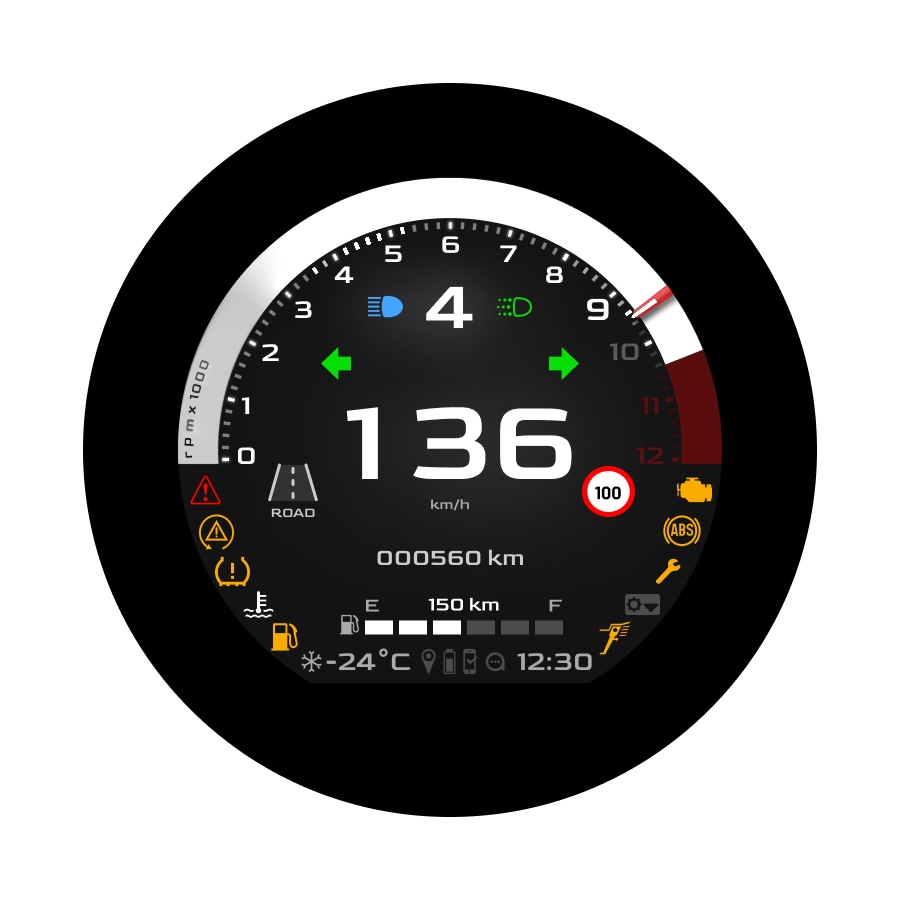
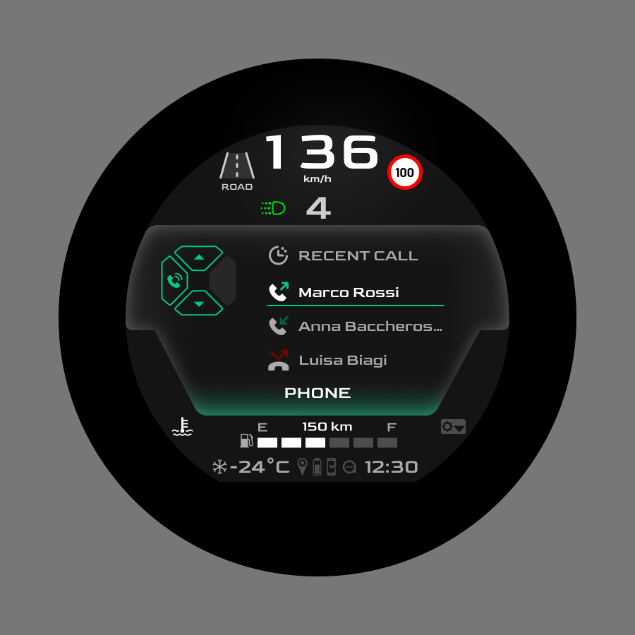
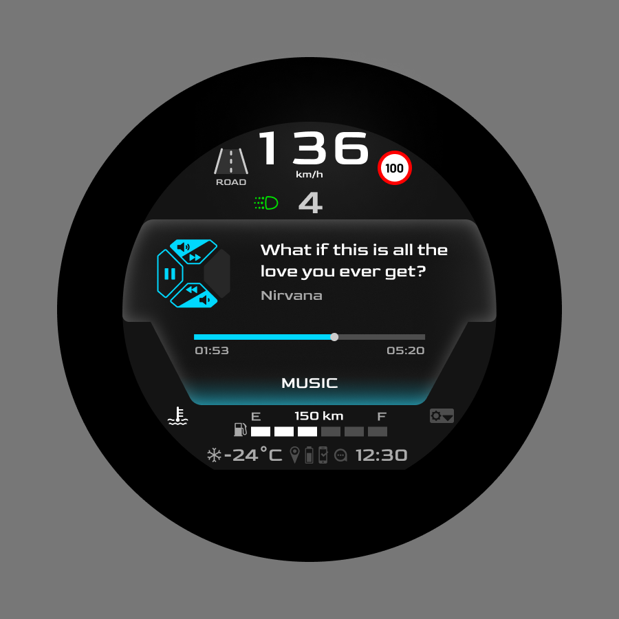
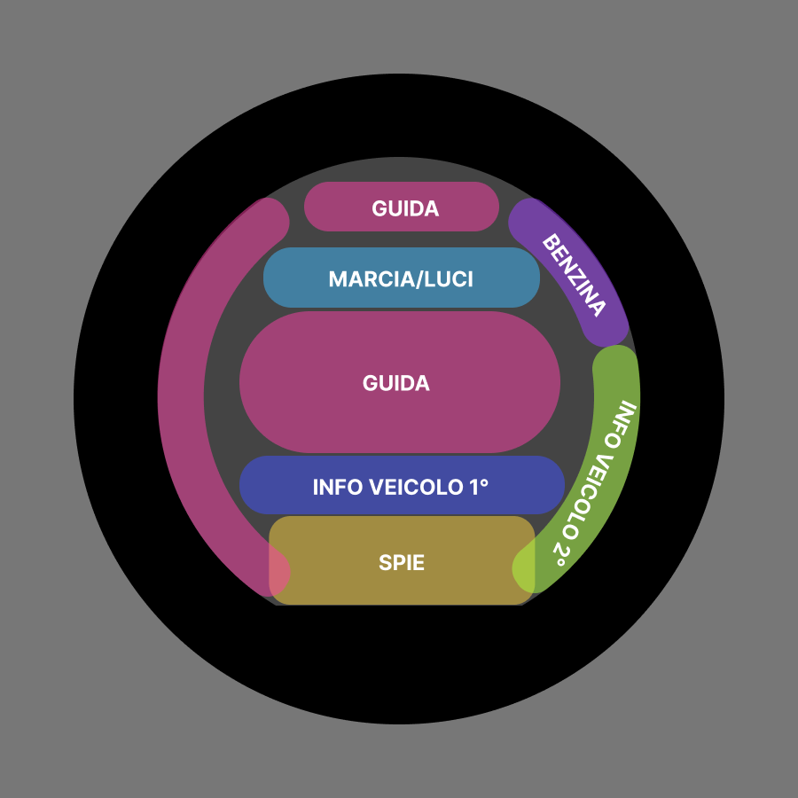

Designing for a three-second glance.
As Product Designer, I helped shape the digital cluster for MGM — a 3.6-inch HMI for a century-old Italian motorcycle brand. The challenge: deliver navigation, communication, music and vehicle status in a screen the rider can only glance at, never read.

On a motorcycle, every second of distraction is a risk.
At 130 km/h, looking at a dashboard for two seconds means traveling more than 70 meters blind. Unlike a car, a motorcycle has no steering wheel to grip, no lane assist, no autonomous braking. The dashboard isn't a screen the rider consults — it's a glance, repeated hundreds of times during a single ride. Every pixel had to earn its place.
- 72 m
- traveled blind at 130 km/h during a 2-second glance away from the road
- 3.6"
- total dashboard real estate for navigation, communication, music and vehicle data
- 3 sec
- the maximum time a rider should need to read any information on screen
Designed for the glance, not the read.
Most vehicle dashboards pack in data. We did the opposite: every screen was reduced to a single primary message, sized and contrasted so the rider absorbs it in one look and returns their eyes to the road.
The interface took shape through iterative co-design with the client and a two-person design team — refining typography, hierarchy and animation round after round until the cockpit felt instant, calm and unmistakably MGM. Neither of us started as HMI experts: the depth came from building it together, decision by decision.
- 1primary message per screen — the rule that shaped every decision
- 5core contexts unified by one interaction model — ride, navigation, music, phone, vehicle
- 0deep menus — every function reachable in two taps or less

Key Decision #1 — Information Hierarchy
Information has to earn its place on screen.
Three seconds was the limit we set ourselves — not a brief requirement, but the toughest filter we could apply. With 3.6 inches of screen and that self-imposed window, every element had to justify why it belonged in the rider's field of view. We organized the dashboard into three priority layers. Permanent information — speed, gear, road, lights — sits in a fixed position at the top, in the same place across every screen, so the rider learns it within minutes and finds it without searching. Contextual content — navigation, calls, music — fills the center only when called by the rider. Transient alerts — low fuel, incoming call, speed warning — override everything for a moment, then disappear. Nothing competes for attention. The screen never says "look at me." It answers "what do you need right now."
- 3 layers of information priority — permanent, contextual, transient — each with its own fixed visual zone
- Always visible speed, gear and road status across every screen, in the same position the rider learns once


Key Decision #2 — One joystick, every context
One joystick, every context.
A motorcycle isn't a smartphone — the rider can't tap, swipe or pinch. Every interaction happens through a physical joystick on the handlebar. That constraint became a principle: the same six inputs (up, down, left, right, center, hold) had to mean the same thing in every context. Whether the rider is in navigation, music or vehicle status, the joystick behaves identically. On-screen directional cues anticipate available actions before the rider has to guess, removing trial-and-error while riding. Once the joystick is learned in the first minute, the rider owns the entire dashboard.
- 6 inputs covering all 5 contexts of the dashboard — one consistent interaction logic
- On-screen cues anticipate every available action, removing trial-and-error while riding



Key Decision #3 — Architecture of information
In 3.6 inches, what you remove matters more than what you add.
Designing for a 3.6-inch round display means every pixel competes for the rider's three-second window. The first iteration tried to fit too much — speed, gear, lights, fuel, temperature, time, road sign, alerts — and the first version felt cluttered and hard to read even to us. So we rebuilt the architecture starting from negative space: defining the empty zones first, then placing data only where it could breathe. Typography was sized for peripheral vision, since the rider rarely looks at the dashboard head-on. Numerals were weighted heavier than labels (a label can be inferred, a number can't). Contrast was tuned for direct sunlight, not for office screens. The result is a layout where the eye lands exactly where it needs to — every time, in any light.
- 3.6" of round canvas designed pixel by pixel, calibrated for direct sunlight legibility
- Negative space first empty zones defined before placing any data — readability before density

The work behind the glance.
- 5
- core contexts designed end-to-end — ride · navigation · music · phone · vehicle
- 7
- dashboard views, from main display to settings, all built on the same logic
- 3.6"
- of round canvas, calibrated pixel by pixel for direct sunlight legibility
- 1
- interaction model — a six-input joystick, consistent across every context